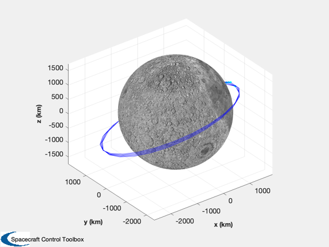
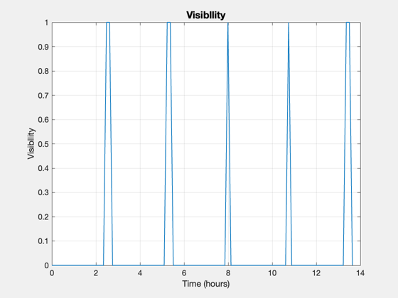

A lunar visibility analysis
Calculate the visibility of a satellite in lunar orbit to a location on the lunar surface.
See also Constant, RPRA2AE, Date2JD, Period, RVOrbGen, LunarVisibility
%-------------------------------------------------------------------------- % Copyright (c) 2016 Princeton Satellite Systems, Inc. % All rights reserved. %-------------------------------------------------------------------------- % Since version 2017.1 %-------------------------------------------------------------------------- rM = Constant('equatorial radius moon'); mu = Constant('mu moon'); hMin = 100; hMax = 1000; [a,e] = RPRA2AE( rM + hMin, rM + hMax ); lat = 0; lon = 0; jD0 = Date2JD([2020 4 4 0 0 0]); p = Period(a,mu); t = linspace(0,5*p); [r,~] = RVOrbGen([a 0 0 0 e 0],t,[],mu); LunarVisibility( lat, lon, jD0, r, t ); %-------------------------------------- % $Id: 2643f5ddaeca1c5f1691bde0a5a9924f70d5ba62 $ 